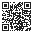

Le lien
Son adresse, le message qu'il pose dans WhatsApp, et ce qui répond au client.
QR code
Colis, affiche, flyer.

Il mène à l'adresse courte : une fois imprimé, il continue de marcher quand vous réécrivez le message.
Résultats
Chaque ouverture du lien compte pour un clic.
Clics au total8 420depuis le 2 févr. 2026
Clics, 30 jours1 240
Par jour, en moyenne41sur 30 jours
Meilleur jour67sam. 7 nov.
Clics par jour
1 240 clics du 18 oct. au 16 nov., jour par jour.
Pas encore de clic
Publiez le lien ou imprimez son QR code : les clics apparaîtront ici, jour par jour.